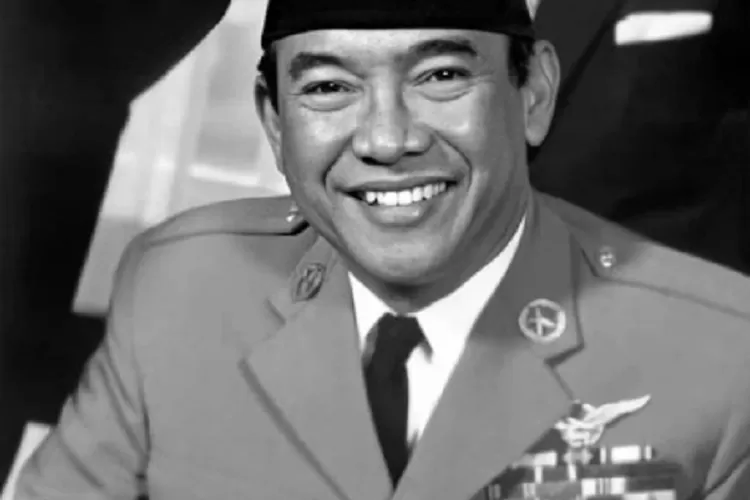
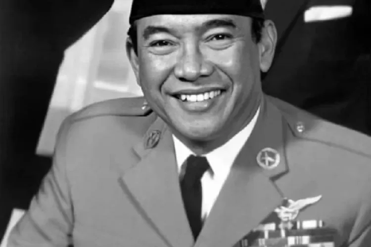

Kalian tau gak siapa itu Ir Soekarno?
Ir Soekarno, lahir 6 juni 1901, yang lebih dikenal dengan nama akrabnya bung karno, Ir Soekarno adalah seorang mantan presiden indonesia yang pertama,dan mengambil juruan Hukum
Sejak kecil, Soekarno sudah menjadi anak yang berprestasi bahkan mampu menguasai banyak bahasa. Itulah sebabnya kecerdasan Soekarno dikenal oleh dunia. Soekarno kemudian mendirikan Algemeene Studie (ASC) di Bandung pada tahun 1926 yang merupakan hasil inspirasi dari Dr. Soetomo di Indonesische Studie Club. Organisasi ASC inilah yang menjadi cikal bakal berdirinya partai besar di Indonesia, Partai Nasional Indonesia yang lahir tahun 1927. Berkat aktif di organisasi PNI itulah Soekarno beberapa ditangkap Belanda karena dianggap membahayakan pemerintah kolonial..
Berbicara soal biografi Ir.Soekarno tidak lengkap rasanya jika tidak membahas kiprahnya di dunia politik yang sangat luar biasa. Ir. Soekarno bahkan sudah terjun ke dunia politik sejak usianya masih sangat muda. Soekarno terkenal pertama kali pada tahun 1915 saat menjadi anggota Jong Java Cabang Surabaya.
 
